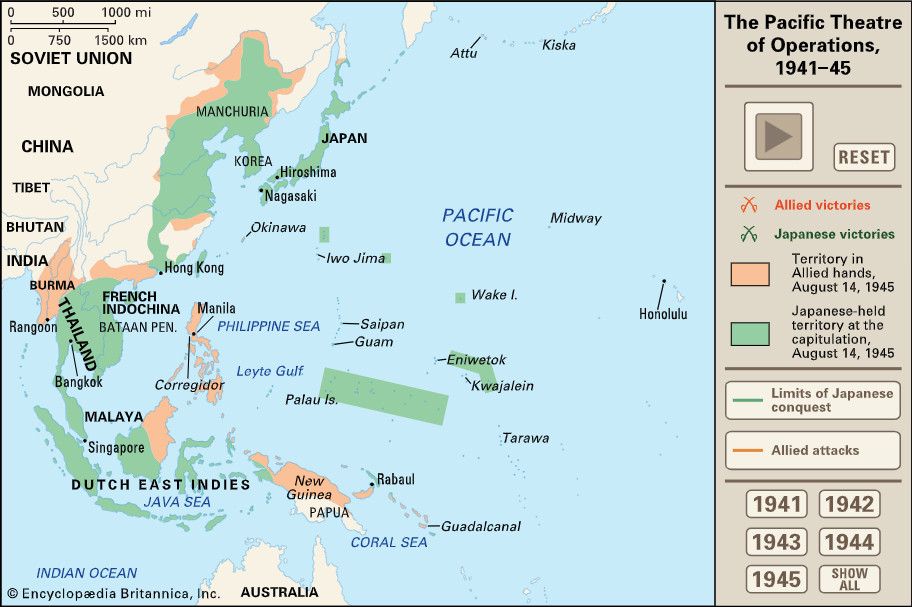

World War II, also called Second World War, conflict that involved virtually
every part of the world
during the years 1939–45. The principal belligerents were the Axis powers—Germany, Italy, and
Japan—and
the Allies—France, Great Britain, the United States, the Soviet Union, and, to a lesser extent,
China.
The war was in many respects a continuation, after an uneasy 20-year hiatus, of the disputes left
unsettled by World War I. The 40,000,000–50,000,000 deaths incurred in World War II make it the
bloodiest conflict, as well as the largest war, in history.

Along with World War I, World War II was one of the great watersheds of
20th-century geopolitical history. It resulted in the extension of the Soviet Union’s power to
nations
of eastern Europe, enabled a communist movement to eventually achieve power in China, and marked the
decisive shift of power in the world away from the states of western Europe and toward the United
States
and the Soviet Union.
...
Outbreak of World War II (1939)
In late August 1939, Hitler and Soviet leader Joseph Stalin signed the German-Soviet Nonaggression Pact, which incited a frenzy of worry in London and Paris. Hitler had long planned an invasion of Poland, a nation to which Great Britain and France had guaranteed military support if it were attacked by Germany. The pact with Stalin meant that Hitler would not face a war on two fronts once he invaded Poland, and would have Soviet assistance in conquering and dividing the nation itself. On September 1, 1939, Hitler invaded Poland from the west; two days later, France and Britain declared war on Germany, beginning World War II. On September 17, Soviet troops invaded Poland from the east. Under attack from both sides, Poland fell quickly, and by early 1940 Germany and the Soviet Union had divided control over the nation, according to a secret protocol appended to the Nonaggression Pact. Stalin’s forces then moved to occupy the Baltic States (Estonia, Latvia and Lithuania) and defeated a resistant Finland in the Russo-Finnish War. During the six months following the invasion of Poland, the lack of action on the part of Germany and the Allies in the west led to talk in the news media of a “phony war.” At sea, however, the British and German navies faced off in heated battle, and lethal German U-boat submarines struck at merchant shipping bound for Britain, sinking more than 100 vessels in the first four months of World War II....